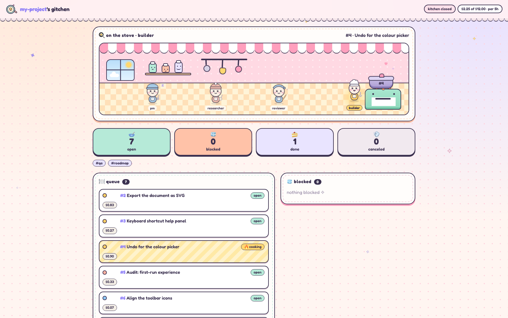
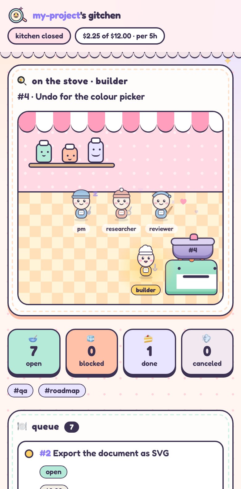

📝
Issues are just files
Every issue is a markdown file, issues/42.md, with its state, labels, priority and assignee in front matter and the conversation underneath. Read it, grep it, diff it, review it.
meet gitchen
A tiny kitchen of AI chefs that cook your issues. Issues are files, roles are prompts, and git remembers everything.
NEXT: assign builderpmpm, builder and reviewer are just example roles; you name your own. The daemon notices an issue's assignee and spawns that role. Nobody calls anybody.
single source of truth
No hidden database, no dashboard that knows more than the repo does. Your issues, your agents and their work all live in git.
Every issue is a markdown file, issues/42.md, with its state, labels, priority and assignee in front matter and the conversation underneath. Read it, grep it, diff it, review it.
Creating, assigning, commenting and closing are all committed, and the commit author is the role that did it. git log is the audit trail.
Each issue gets its own issue/42 branch in its own git worktree, so agents never trip over each other. Accepted work is fast-forwarded into main, or squashed into one commit if you like.
---
id: 42
title: Add a dark mode toggle
state: open
labels: [roadmap]
priority: 30
assignee: builder
base_branch: main
---
Users ask for a dark theme. Add a toggle in
settings and remember the choice.
## Comments
**pm** Acceptance: toggle persists, contrast passes.$ git log --format='%h %an: %s' issues/
3f9a1c2 pm: Issue #12: assigned to builder
b81e704 pm: Issue #12: comment
9d2a6f5 reviewer: Issue #11: returned to pm
e407b3a reviewer: Issue #11: comment
6c1d85e pm: Issue #11: assigned to reviewer
# who did what, and when, foreveryour brigade, your rules
gitchen has no built-in roles. A role is whatever you define: a markdown prompt, a model size and a short list of tools. Name them anything, and hand work from one to the next by assigning the issue.
An example: writes the acceptance criteria, sequences the work, and merges, closes or blocks.
An example: takes one issue, builds it in its worktree, tests it and commits.
An example: verifies the work instead of trusting the self-report, then returns it.
An example: answers questions and digs through the repo so the others don't have to.
A designer, a security auditor, a release chef, a docs gardener. Drop a prompt file in agents/ and it's a role. What it may do comes only from its allowed_tools: “can assign & close” just means it was given those tools.
builder, reviewer and researcher also ship as generic, reusable prompts in library/. The rest is up to you.
role_settings:
builder: {model: small}
reviewer: {model: small}
pm: {model: medium}
allowed_tools:
builder: [list_issues, get_issue]
pm: [list_issues, get_issue,
update_issue, create_issue, assign_issue]
transitions:
builder: {built: assign reviewer, stuck: return}
reviewer: {approved: merge, rejected: return}---
name: builder
description: "Builds one issue-sized feature or
fix in the repo at cwd, tests it, commits it."
---
You are building a change in the repo at your
current working directory. You'll be given one
issue; that is everything in scope for this turn.
Work without asking questions. Build, don't wait.the brigade
Folders decide who may change what. A pastry chef doesn't re-price the dining room, but can ask for it in writing.
Issues live in folders. An edit_scopes entry says which folders a role may change. A role outside them can't edit those issues, only file a new one there.
Creating an issue is allowed in any folder, so a role that spots a problem in another department can say so without touching it.
Each turn's cost is written on its issue, by model. A retro role reads those records to say which departments pay off.
budget-friendly cooking
gitchen doesn't promise magic numbers. It gives you the knobs, and takes the expensive work off the model wherever it can.
Each role asks for a small, medium or big model. Chop vegetables with a small one, reserve the big one for the roles that really think.
There is no coordinator model burning tokens to watch the others. Dispatch is a plain polling loop, and the circuit breaker, merge gate and directive parsing are ordinary code that costs zero tokens.
A role is spawned fresh against one issue and handed that issue's body and notes straight from git. No chat session is kept alive and dragged along from hop to hop.
A role's MCP connection lists only the tools in its allowed_tools, so it isn't shown, or tempted by, a whole toolbox it can't use.
Set a spending limit for the instance, with a window if you like. The kitchen stops when it's reached, and carries on when the window moves or you reset it. Every order shows what it cost, by model.
the recipe
Create an issue. It's a commit, and it has an assignee.
An open issue whose assignee isn't busy gets that role spawned, whatever you named it. No one calls another role directly.
The turn runs sandboxed in the issue's worktree. Its output becomes a comment, and its last line says how it went: built. The kitchen's transitions table decides that a built order goes to review.
When the reviewer says approved, the table says merge, and the branch lands on main. A wait on other orders is blocked_by #12 #13, and the order cooks again by itself once they're done.
The bit you're in charge of is judgment: re-delegating something blocked, deciding what ships. Everything the daemon can drive, it drives purely off issue state.
the kitchen view
gitchen web serves a read-only view of your project: who's on the stove, what's queued, blocked or done, with a page per issue. It updates live and it looks lovely on a phone.


any harness, safely
Turns run through small adapters for Claude Code and omp, and nothing in the framework depends on one vendor. Which CLI and which models a machine uses is that machine's config, not the project's.
Each turn runs inside an OS-level sandbox that can only touch the paths it's granted, mostly its own issue's worktree, and reach only the hosts you allow. Unattended agents can't wander off.
The tools agents are trusted with are served by a tiny stdlib MCP server. Permissions are enforced there, whichever harness is on the other end.
get cooking
Install once per machine, then run gitchen from inside an instance repo: a git repo holding your project.yml, your agents/*.md and your issues.
$ git clone https://github.com/josei/gitchen ~/Code/gitchen$ ln -s ~/Code/gitchen/bin/gitchen ~/.local/bin/gitchen$ cd ~/Code/my-agents$ gitchen daemon start$ gitchen webOn first use gitchen detects the agent CLIs you have, writes a sensible machine config, and installs its sandbox profile. The README has the whole menu.
Come cook with us. Stars, issues and tiny chef hats are all welcome.
gitchen on GitHub